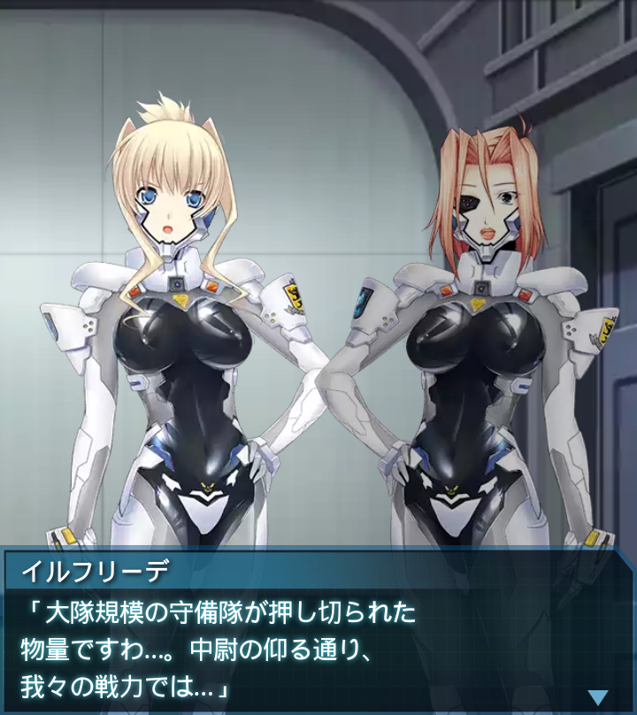
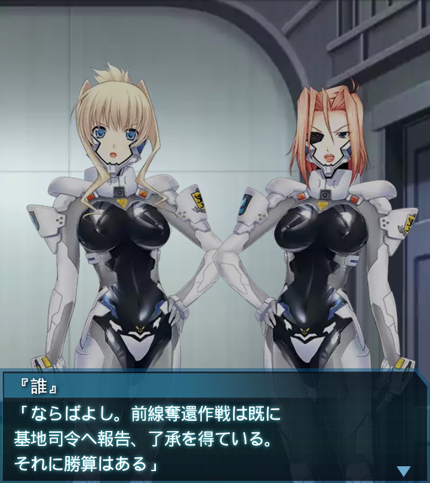
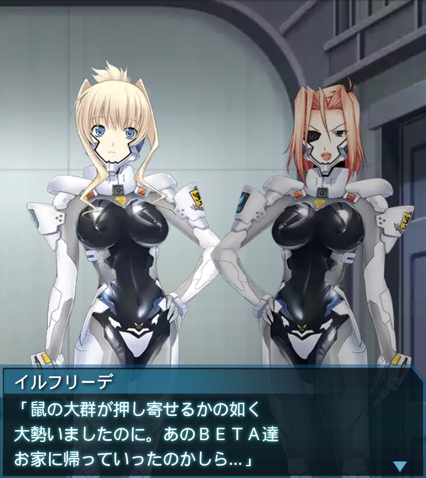
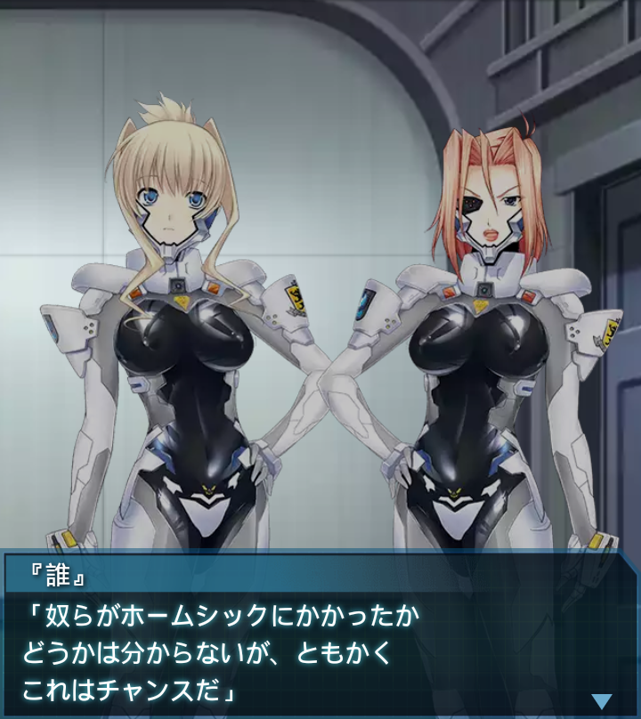

エジプト・カイロ周辺砂漠地帯
ブリギッテ
「イスマイリヤ基地の奪還作戦？
本気ですか？あそこは最早ＢＥＴＡ
の巣！奪還は不可能に等しい！」

イルフリーデ
「大隊規模の守備隊が押し切られた
物量ですわ…。中尉の仰る通り、
我々の戦力では…」
『誰』
「守備隊の大半は旧型のF-４Eを
使用し、兵の練度も低かった。
それでは前線瓦解も無理はない」
『誰』
「それだけアフリカの奪還が重要で
主力をそちらに割いていたと想像に
難くないが――」
『誰』
「中尉のオアーゼ中隊はどうだ？
新兵に毛が生えた程度のお飾り
兵士か？」
ブリギッテ
「我がオアーゼ中隊に教本が必要な
兵は一人たりとも存在しません！」

『誰』
「ならばよし。前線奪還作戦は既に
基地司令へ報告、了承を得ている。
それに勝算はある」
『誰』
「偵察部隊からイスマイリヤ基地の
ＢＥＴＡ数は充分対処できる程度に
落ち着いると報告を受けている」

イルフリーデ
「鼠の大群が押し寄せるかの如く
大勢いましたのに。あのＢＥＴＡ達
お家に帰っていったのかしら…」

『誰』
「奴らがホームシックにかかったか
どうかは分からないが、ともかく
これはチャンスだ」
『誰』
「そしてその作戦の第一段階として
俺達はカイロ南東の砂漠に現れた
ＢＥＴＡを倒しに行く」
『誰』
「俺は砂漠での戦闘は素人だ。今後
予想される砂上でのダンスに備えて
レクチャーを頼む！出撃準備！」

ブリギッテ
「油断してると痛い目に遭うぞ！
そこだぁっ！！撃破！！」
『誰』
「油断して痛い目か。ふむ。俺に
言っているのかと一瞬、緊張したが
ＢＥＴＡに対しての発言か…」
イルフリーデ
「途中から砂漠戦のレクチャーも
忘れて敵殲滅に勤しんでいますわね
…中尉ったら」
ブリギッテ
「大尉！砂中のＢＥＴＡには
振動センサーは役に立たない！
不意の戦闘を常に……そこか！」
ブリギッテ
「撃破！…不意の戦闘を常に
意識すること！…砂中に潜ろうが、
無駄だ！そこッ！…撃破ッ！」

『誰』
「あ、ああ、了解だ。俺の分の
お友達も残しておいてくれ、中尉。
もう少し砂上戦経験をだな…」
イルフリーデ
「あら。じきに目標は全滅ですね。
それでは私がのんびりと砂上戦に
ついてお教えしますね、ふふ」
『誰』
「戦闘中にのんびりか…。さすが、
ツェルベルス隊の士官は肝が
座っているな…」
ブリギッテ
「砂中からだと？甘いな！私の
眼を出し抜こうなどと！散れ！
ＢＥＴＡの殲滅を確認！」
『誰』
「よし、オアーゼ２！模擬戦でも
何でも頼む！のんびりでもいい！
じっくり教育してくれ…」